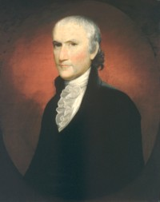

Egbert Benson
Egbert Benson was born in New York in June 1746. He was the youngest son of Robert and Catharina Van Borsum Benson. His father was a brewer but a member of a distinguished family. Egbert's long career was in the law and as a jurist.  He lived in Albany during the 1790s and early 1800s. His ancestor was Beverwyck pioneer Dirck Bensing.
He graduated from King's College in 1765. He then practiced law in New York and in Dutchess County and lived in Upper Red Hook near what later became the Columbia/Dutchess border. James Kent was among the clerks who studied in Benson's law office.
As a refugee from occupied New York City, he served the Revolutionary cause in a number of capacities in Dutchess County and at the state and national levels as well. In 1777, he was appointed the first Attorney General of New York State.
During the summer of 1781, he was one of the non resident attorneys retained by the Albany city government regarding a dispute related to ferry rights and the damming of a creek by Mrs. Jannetje Lansing.
In 1790, his household was configured on the census for Poughkeepsie. At that time, it included two men, two females, and a slave.
He re-located to Albany after his appointment to the New York State Supreme Court in 1794. In 1799, he owned a house and lot in the first ward and a lot in the third ward. In 1800, his first ward household was served by two slaves. Perhaps his unmarried older brother, Henry Benson (1741-1823), lived with him.
He returned to New York City about 1803 and later was elected to the United State House of Representatives. He resigned in 1813 and then seems to have retired from public office.
In 1816, he read an extensive historical memoir before the New York Historical Society.
Egbert Benson appears to not have married - or at least not until late in life. In 1820, he was in his seventies when he supposedly married his cousin, the very much younger Maria Cowenhoven/Conover. But wait! Difficult to accept that this august individual was the father of the eight children born to that marriage over the next decade and a half.
"Bensonhurst" in Brooklyn is said to have been named for its settlers, the Benson brothers.
Onetime Albany resident, Egbert Benson died in Jamaica, Queens in 1833. He had lived eighty-seven years.
first posted: 8/30/08